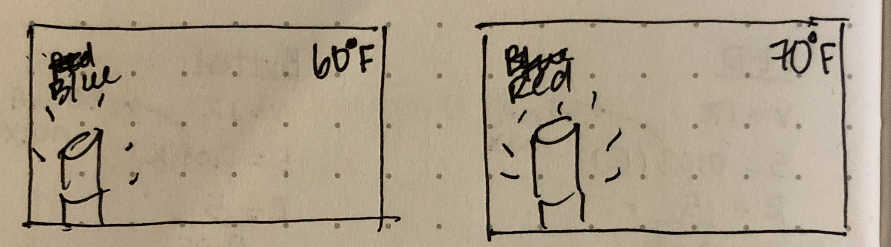

My first idea is a decorative lighting device that changes color depending on how much light there is in the room. When the surroundings are brighter, it can function as normal white lighting, and while the surroundings are dark, it changes to a color like red or blue for events and parties.

My other idea is a visual thermostat, where the device lights up blue if the temperature is low and red if it is high.